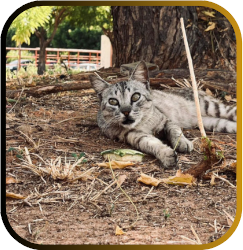

NÃO ABANDONE QUEM NUNCA...
ABANODARÁ VOÇÊ
A Secretaria Estadual do Meio Ambiente SEMA tem a missão de promover a defesa do meio ambiente, bem como formular, planejar e coordenar a política ambiental do estado do Ceará de forma participativa e integrada em todos os níveis de governo e sociedade.
O abandono é mais do que um crime ambiental: é um ato de crueldade contra a vida. Os animais abandonados sofrem com sede, fome, doenças e maus-tratos nas ruas, praças e parques.
Ciente dessa situação, a SEMA acredita que, através da educação e da união entre governo e sociedade, os animais domésticos terão a oportunidade de ter uma vida digna, repleta de carinho e de companheirismo ao lado dos seres humanos.
Secretaria Estadual do Meio Ambiente
